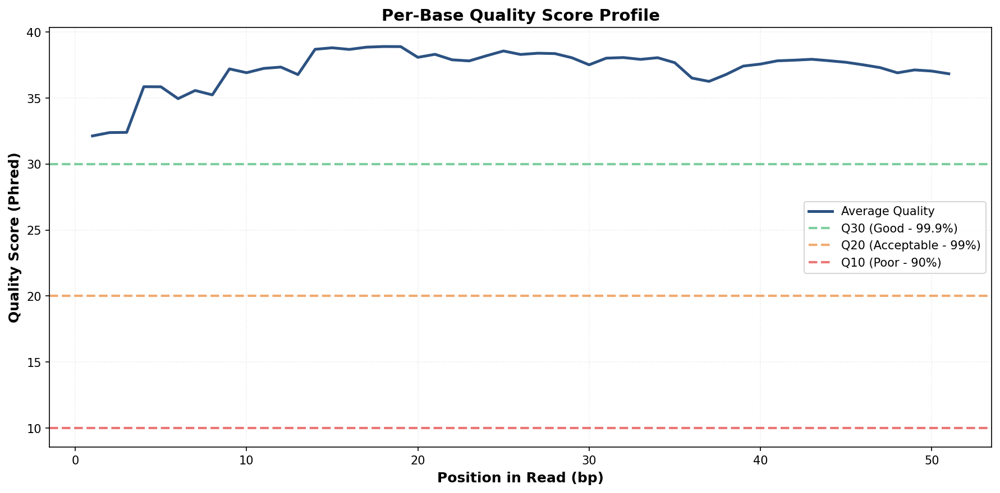
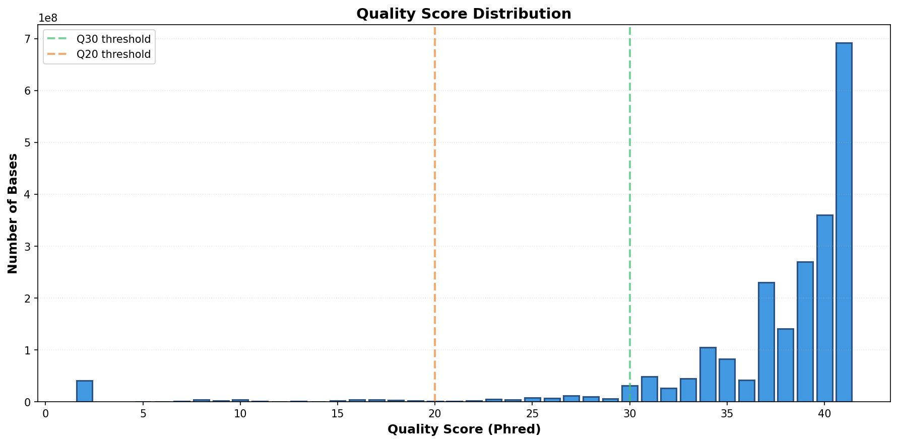
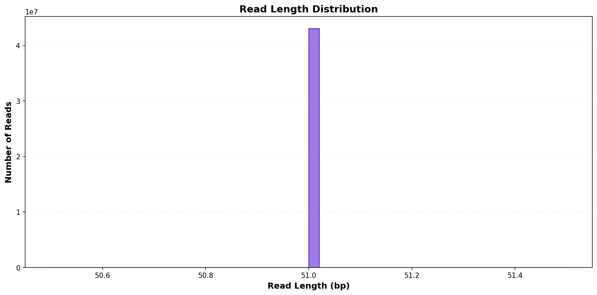

Summary Statistics
Total Reads
43,072,712
Total Bases
2,196,708,312
Average Quality
Q37.2
Average Read Length
51 bp
Data is high quality. Ready for downstream analysis.
Quality Control Plots
Per-Base Quality Score Profile

Shows average quality score at each position in the read. Higher is better. Should stay above Q20 (orange line).
Quality Score Distribution

Histogram showing how many bases have each quality score. Most bases should be Q30+ (right side).
Read Length Distribution

Distribution of read lengths. Should show a narrow peak if sequencing and trimming were uniform.
Bad Cycles Detection
✓ No bad cycles detected!
All positions maintain quality above Q20 threshold.
Recommendations
Quality Assessment & Next Steps:
- ✓ No bad cycles detected. Quality is consistent across read length.
- ✓ Quality is excellent. Ready for alignment without trimming.
- ✓ Read length is appropriate for your analysis.
Quality Score Interpretation
| Quality Score | Error Probability | Accuracy | Interpretation |
|---|---|---|---|
| Q10 | 1 in 10 | 90% | Poor - Avoid |
| Q20 | 1 in 100 | 99% | Acceptable - Minimum threshold |
| Q30 | 1 in 1,000 | 99.9% | Good - Standard target |
| Q40 | 1 in 10,000 | 99.99% | Excellent - Very high quality |